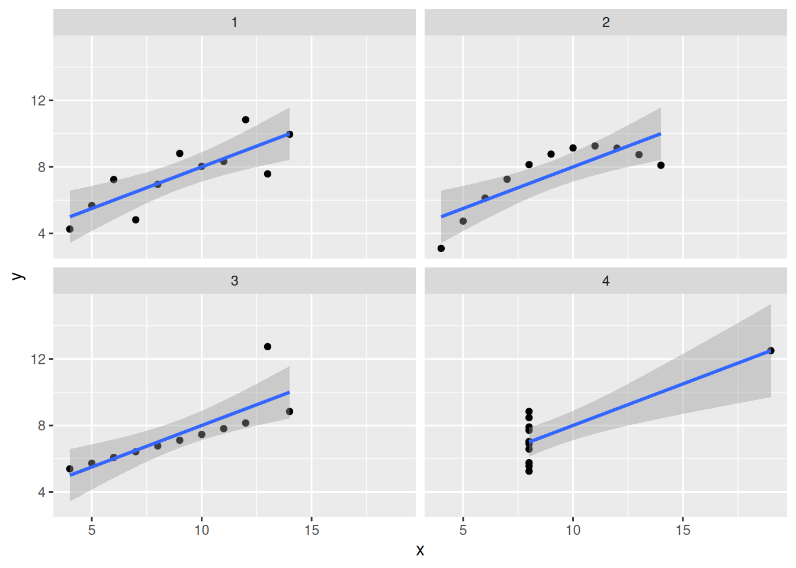
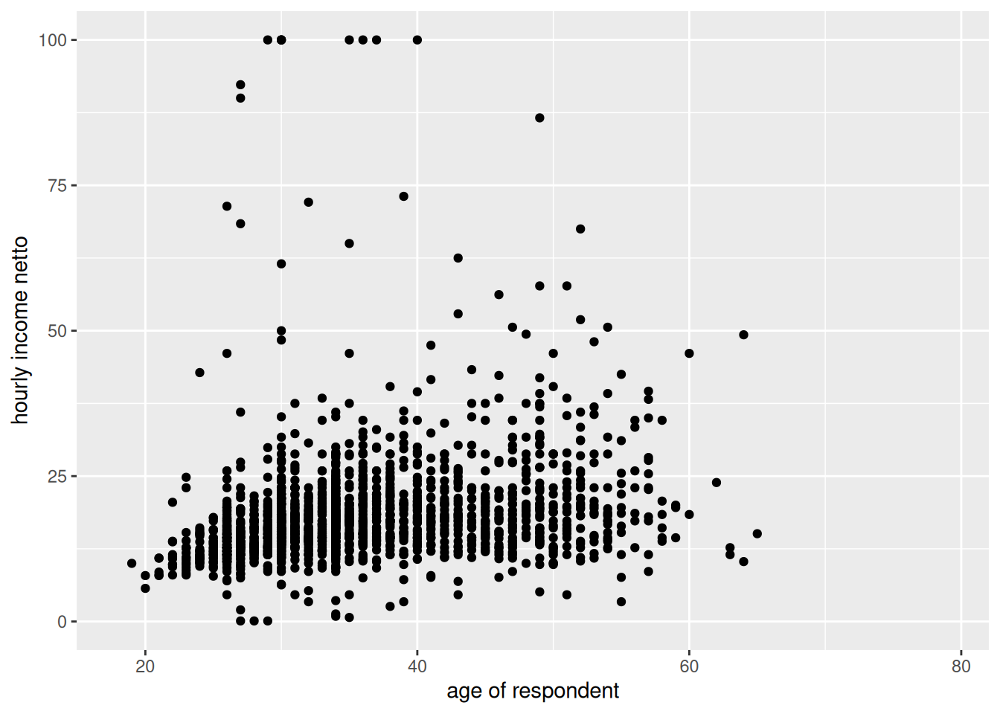
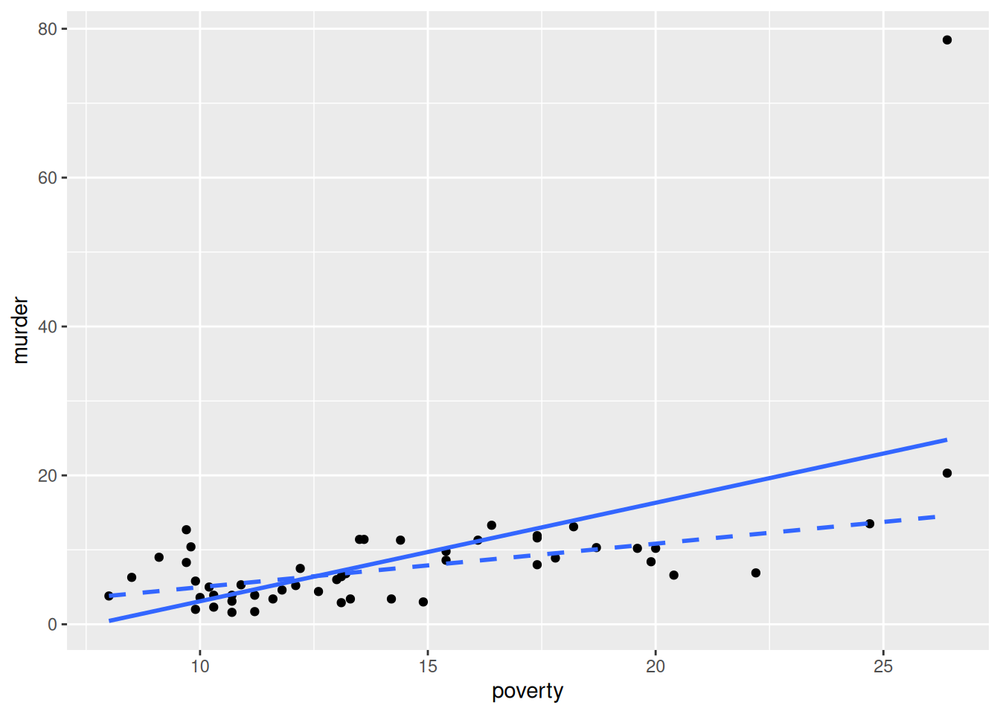

Use the dataset anscombe. This is a built-in dataset that you can load with data(anscombe) and contains four pairs of variables, (x1,y1), (x2,y2), (x3,y3), and (x4,y4).
Fit four separate bivariate regressions: y1 on x1, y2 on x2, y3 on x3, and y4 on x4. Compare the intercepts, slopes, standard errors, and \(R^2\) values of the four models. What do you notice?
Tip: we recommend using the function modelsummary(), from the package of the same name, to produce regression tables, especially when comparing models. It supports a wide range of models (including the more complex models you will learn later in the programme) and makes it easy to produce tables (almost) ready for publication.
Make a scatterplot with a fitted regression line for each of the four pairs. Inspect the four plots side by side.
Tip: You can of course make separate plots, but you can also restructure the dataset from wide to long, then use facet_wrap() or facet_grid() when building a ggplot.
What is your conclusion? Why is it not sufficient to only report regression coefficients and \(R^2\)?
Crime and poverty
Use the dataset state_crime. This dataset contains, for each U.S. state, the murder rate (murder) and a poverty score (poverty).
Make a scatterplot of murder against poverty, with state names (state) as labels. Which state stands out as an outlier?
Fit a regression of murder on poverty using all states. Report and interpret the intercept, the slope, and \(R^2\).
Refit the regression excluding the outlying state, without removing the observation from the dataset (use a filter() inside the data argument, or subset only for this call). Compare the intercept, slope, and \(R^2\) to the results in the previous question. What is the effect of this single observation on the results?
Income and age
Use the dataset sbs399. Formulate a hypothesis about the relation between response variable hourly income (hrinc) and predictor variable age.
Make a scatterplot of hrinc against age. Does the relationship look linear? Are there any outliers?
Fit a regression of hrinc on age (i.e. hrinc as the oucome and age as predictor). Interpret the intercept, the slope, and \(R^2\).
Compute the mean of hrinc separately for men and women (e.g. using and summarise() with .by). What is the difference between the two means?
Fit a regression of hrinc on sex. Compare the regression coefficient for sex to the difference in means found in the previous question.
Sesame street
The data sesam are part of a larger data set that evaluates the impact of the first year of the Sesame Street television series. Sesame Street (SS) is mainly concerned with teaching preschool related skills to children in the 3–5-year age range. Use the following variables:
sex
peabody: vocabulary maturity before watching SS
postnumb: knowledge of numbers after a year of SS
Use postnumb as the response variable. Is the relation between postnumb and peabody linear? If not, think about a possible linearizing transformation of the response variable.
Fit a linear regression of postnumb on peabody. Report and interpret the intercept, slope, and \(R^2\). Is the null hypothesis of no relation between peabody and postnumb rejected?
Fit a regression of postnumb on female. Is there evidence that boys and girls differ, on average, on postnumb?
Answers
NoteSee answers
Make sure this file is in the same R Project as the data folder. Use relative file paths, not full paths to your computer.
library(tidyverse)
── Attaching core tidyverse packages ──────────────────────── tidyverse 2.0.0 ──
✔ dplyr 1.2.1 ✔ readr 2.2.0
✔ forcats 1.0.1 ✔ stringr 1.6.0
✔ ggplot2 4.0.3 ✔ tibble 3.3.1
✔ lubridate 1.9.5 ✔ tidyr 1.3.2
✔ purrr 1.2.2
── Conflicts ────────────────────────────────────────── tidyverse_conflicts() ──
✖ dplyr::filter() masks stats::filter()
✖ dplyr::lag() masks stats::lag()
ℹ Use the conflicted package (<http://conflicted.r-lib.org/>) to force all conflicts to become errors
library(haven)library(modelsummary)
Anscombe’s quartet
data(anscombe)fit1 <-lm(y1 ~ x1, data = anscombe)fit2 <-lm(y2 ~ x2, data = anscombe)fit3 <-lm(y3 ~ x3, data = anscombe)fit4 <-lm(y4 ~ x4, data = anscombe)modelsummary(list(fit1, fit2, fit3, fit4), stars =TRUE)
(1)
(2)
(3)
(4)
+ p < 0.1, * p < 0.05, ** p < 0.01, *** p < 0.001
(Intercept)
3.000*
3.001*
3.002*
3.002*
(1.125)
(1.125)
(1.124)
(1.124)
x1
0.500**
(0.118)
x2
0.500**
(0.118)
x3
0.500**
(0.118)
x4
0.500**
(0.118)
Num.Obs.
11
11
11
11
R2
0.667
0.666
0.666
0.667
R2 Adj.
0.629
0.629
0.629
0.630
AIC
39.7
39.7
39.7
39.7
BIC
40.9
40.9
40.9
40.9
Log.Lik.
-16.841
-16.846
-16.838
-16.833
F
17.990
17.966
17.972
18.003
RMSE
1.12
1.12
1.12
1.12
# Tip: modelsummary allows for a lot of customization# If you want to show the p.value in the table, use:# modelsummary(list(fit1, fit2, fit3, fit4), stars = TRUE, statistic = c("std.error", "p.value"))
Coefficients, standard errors, and R-squared are (essentially) identical
Scatterplots with fitted regression line:
# Solution 1: separate plotsp1 <-ggplot(anscombe, aes(x = x1, y = y1)) +geom_point() +geom_smooth(method ="lm")p2 <-ggplot(anscombe, aes(x = x2, y = y2)) +geom_point() +geom_smooth(method ="lm")# And so on for models 3 and 4...# Solution 2: restructure, then use facetsanscombe |>pivot_longer(everything(),names_pattern ="(x|y)(\\d)",names_to =c(".value", "set") ) |>ggplot(aes(x = x, y = y)) +geom_point() +geom_smooth(method ="lm") +facet_wrap(~set)
`geom_smooth()` using formula = 'y ~ x'

The actual data patterns are quite different!
Crime and poverty
state_crime <-read_dta("data/state_crime.dta")
Spotting the outlier:
ggplot(state_crime, aes(x = poverty, y = murder)) +geom_point()
The outlier is Washington DC, with an exceptionally high murder rate.
Regression using all states:
fit_crime <-lm(murder ~ poverty, data = state_crime)summary(fit_crime)
Call:
lm(formula = murder ~ poverty, data = state_crime)
Residuals:
Min 1Q Median 3Q Max
-12.333 -4.177 -0.875 1.569 53.710
Coefficients:
Estimate Std. Error t value Pr(>|t|)
(Intercept) -10.1364 4.1206 -2.460 0.0175 *
poverty 1.3230 0.2754 4.804 1.51e-05 ***
---
Signif. codes: 0 '***' 0.001 '**' 0.01 '*' 0.05 '.' 0.1 ' ' 1
Residual standard error: 8.926 on 49 degrees of freedom
Multiple R-squared: 0.3202, Adjusted R-squared: 0.3063
F-statistic: 23.08 on 1 and 49 DF, p-value: 1.508e-05
# E(murder) = -10.14 + 1.32 poverty (SE = 0.28)
A 1 unit increase in the poverty scale yields a predicted increase of 1.32 units in the murder rate. R-squared = 0.32: 32% of the variance in murder rate is explained by the poverty rate. Note that the intercept is negative, which would mean a negative murder rate at a poverty score of 0. This of course does not make sense substantively, it is just a linear extrapolation to a value outside the range of the poverty score.
Regression excluding the outlier:
fit_crime_no_dc <-lm(murder ~ poverty, data = state_crime |>filter(state !="DC"))summary(fit_crime_no_dc)
Call:
lm(formula = murder ~ poverty, data = filter(state_crime, state !=
"DC"))
Residuals:
Min 1Q Median 3Q Max
-5.2134 -2.2472 -0.3956 2.2659 7.8896
Coefficients:
Estimate Std. Error t value Pr(>|t|)
(Intercept) -0.8567 1.5278 -0.561 0.578
poverty 0.5842 0.1043 5.600 1.02e-06 ***
---
Signif. codes: 0 '***' 0.001 '**' 0.01 '*' 0.05 '.' 0.1 ' ' 1
Residual standard error: 3.131 on 48 degrees of freedom
Multiple R-squared: 0.3952, Adjusted R-squared: 0.3826
F-statistic: 31.36 on 1 and 48 DF, p-value: 1.017e-06
# The two models side by sidemodelsummary(list(fit_crime, fit_crime_no_dc), stars =TRUE)
(1)
(2)
+ p < 0.1, * p < 0.05, ** p < 0.01, *** p < 0.001
(Intercept)
-10.136*
-0.857
(4.121)
(1.528)
poverty
1.323***
0.584***
(0.275)
(0.104)
Num.Obs.
51
50
R2
0.320
0.395
R2 Adj.
0.306
0.383
AIC
372.0
260.0
BIC
377.8
265.7
Log.Lik.
-182.985
-126.986
F
23.081
31.361
RMSE
8.75
3.07
# E(murder) = -0.86 + 0.58 poverty (SE = 0.10)
A 1 unit increase in the poverty scale now gives a predicted increase of only 0.58 units in the murder rate. R-squared = 0.40: 40% of the variance in murder rate is now explained by the poverty rate.
Income and age
sbs399 <-read_dta("data/sbs399.dta")
Scatterplot of income against age. We expect a positive relation between age and hourly income.
ggplot(sbs399, aes(x = age, y = hrinc)) +geom_point()
Warning: Removed 1381 rows containing missing values or values outside the scale range
(`geom_point()`).

There are a number of observations with a score of 100 on the variable hrinc. Missings or hrinc cutted off at 100? We don’t know. These observations may be outliers in Y-space. Is the relation linear? Maybe quadratic.
fit_age <-lm(hrinc ~ age, data = sbs399)summary(fit_age)
Call:
lm(formula = hrinc ~ age, data = sbs399)
Residuals:
Min 1Q Median 3Q Max
-20.503 -4.030 -1.474 1.737 83.604
Coefficients:
Estimate Std. Error t value Pr(>|t|)
(Intercept) 8.02366 0.89163 8.999 <2e-16 ***
age 0.28871 0.02472 11.681 <2e-16 ***
---
Signif. codes: 0 '***' 0.001 '**' 0.01 '*' 0.05 '.' 0.1 ' ' 1
Residual standard error: 9.142 on 1967 degrees of freedom
(1381 observations deleted due to missingness)
Multiple R-squared: 0.06487, Adjusted R-squared: 0.06439
F-statistic: 136.4 on 1 and 1967 DF, p-value: < 2.2e-16
If age increases by 1 year, hourly income significantly rises by 0.29 EUR. Age explains 6.5% of the variance in income. The intercept of 8.02 is the predicted income at age 0, which is meaningless in itself.
# A tibble: 2 × 2
sex mean_hrinc
<dbl+lbl> <dbl>
1 0 [man] 19.6
2 1 [woman] 16.2
Income is 3.4 EUR lower for women.
Regression of income on sex:
fit_sex <-lm(hrinc ~ sex, data = sbs399)summary(fit_sex)
Call:
lm(formula = hrinc ~ sex, data = sbs399)
Residuals:
Min 1Q Median 3Q Max
-19.497 -4.684 -1.784 1.716 83.816
Coefficients:
Estimate Std. Error t value Pr(>|t|)
(Intercept) 19.5973 0.2757 71.073 < 2e-16 ***
sex -3.4130 0.4244 -8.041 1.52e-15 ***
---
Signif. codes: 0 '***' 0.001 '**' 0.01 '*' 0.05 '.' 0.1 ' ' 1
Residual standard error: 9.302 on 1967 degrees of freedom
(1381 observations deleted due to missingness)
Multiple R-squared: 0.03183, Adjusted R-squared: 0.03134
F-statistic: 64.66 on 1 and 1967 DF, p-value: 1.519e-15
The regression coefficient for sex is -3.41, which is the difference in expected hourly income between men and women as computed before. (Note that the output of the previous question was printed with fewer decimals, but R stores it with much higher precision. Fee free to explore how to check that the simple difference corresponds to the regression coefficient up to several decimals).
Sesame street
sesam <-read_dta("data/sesam.dta")
Scatterplot:
ggplot(sesam, aes(x = peabody, y = postnumb)) +geom_point()

The relation looks nonlinear: it is increasing, but decreasingly so. A quadratic transformation of peabody might help.
Regression:
fit_peabody <-lm(postnumb ~ peabody, data = sesam)summary(fit_peabody)
Call:
lm(formula = postnumb ~ peabody, data = sesam)
Residuals:
Min 1Q Median 3Q Max
-27.7455 -7.7933 -0.3047 7.7511 28.1208
Coefficients:
Estimate Std. Error t value Pr(>|t|)
(Intercept) 10.50537 2.19847 4.778 3.09e-06 ***
peabody 0.41793 0.04448 9.395 < 2e-16 ***
---
Signif. codes: 0 '***' 0.001 '**' 0.01 '*' 0.05 '.' 0.1 ' ' 1
Residual standard error: 10.99 on 238 degrees of freedom
Multiple R-squared: 0.2705, Adjusted R-squared: 0.2675
F-statistic: 88.27 on 1 and 238 DF, p-value: < 2.2e-16
# E(postnumb) = 10.50 + 0.42 peabody (SE = 0.04)
The null hypothesis of no relation between peabody and postnumb is rejected. Note: a significant slope does not mean the linear model is appropriate. It only means a straight line fits better than a horizontal one.
fit_sex <-lm(postnumb ~ sex, data = sesam)summary(fit_sex)
Call:
lm(formula = postnumb ~ sex, data = sesam)
Residuals:
Min 1Q Median 3Q Max
-30.064 -11.043 -1.044 11.936 23.956
Coefficients:
Estimate Std. Error t value Pr(>|t|)
(Intercept) 30.02296 2.66259 11.276 <2e-16 ***
sex 0.02052 1.66331 0.012 0.99
---
Signif. codes: 0 '***' 0.001 '**' 0.01 '*' 0.05 '.' 0.1 ' ' 1
Residual standard error: 12.87 on 238 degrees of freedom
Multiple R-squared: 6.396e-07, Adjusted R-squared: -0.004201
F-statistic: 0.0001522 on 1 and 238 DF, p-value: 0.9902
Difference is 0.02, not significant. There is no evidence that the average postnumb scores for boys and girls differ.